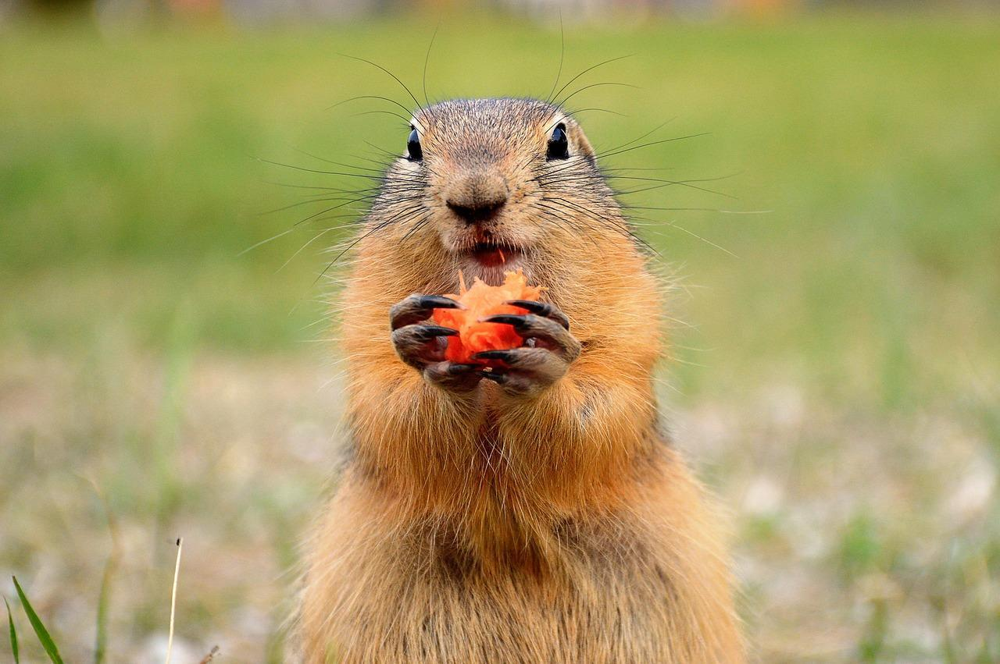
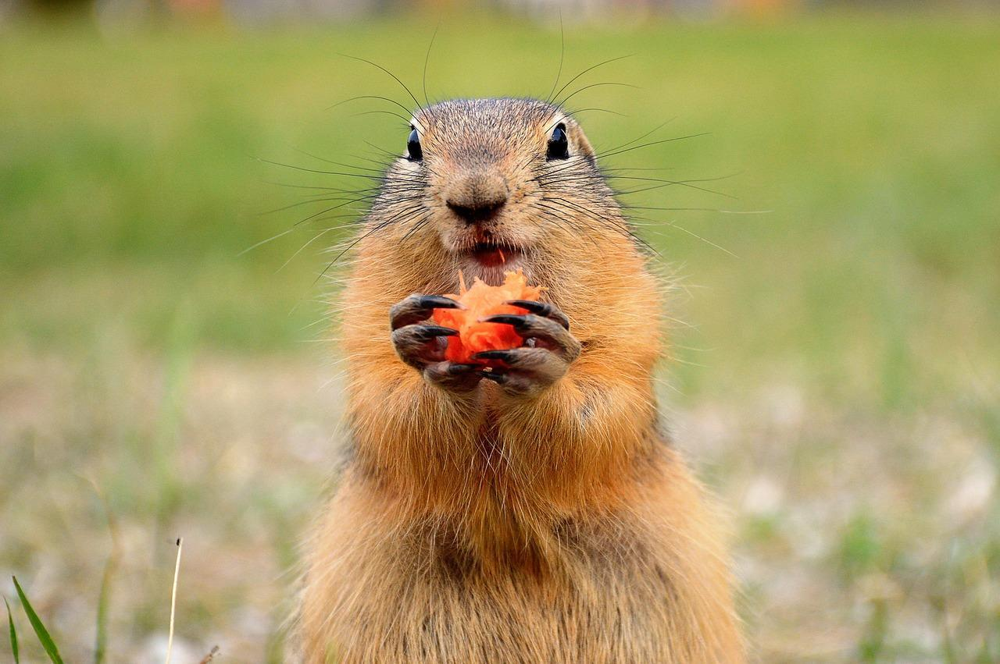

Si quieres ver más imágenes de marmotas, da click en este enlace.
3 cosas que las marmotas comen:
3 aromas que las marmotas odian:
¿Las marmotas son peligrosas?
*Por lo general las marmotas son inofensivas para los humanos o sus mascotas, sin embargo, es posible que porten rabia.
¿Qué marmota eres?
 
